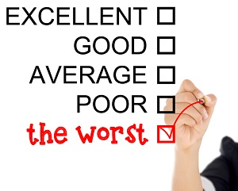

Recovering a damaged reputation
In 2009, it was revealed that some of the information published by the University of East Anglia’s Climatic Research Unit (CRU) in the UK, concerning climate change, had been inaccurate. Furthermore, it was alleged that some of the relevant statistics had been withheld from publication. The ensuing controversy affected the reputation not only of that institution, but also of the Intergovernmental Panel on Climate Change (IPCC), with which the CRU is closely involved, and of climate scientists in general. Even if the claims of misconduct and incompetence were eventually proven to be largely untrue, or confined to a few individuals, the damage was done. The perceived wrongdoings of a few people had raised doubts about the many.
The response of most climate scientists was to cross their fingers and hope for the best, and they kept a low profile. Many no doubt hoped that subsequent independent inquiries into the IPCC and CRU would draw a line under their problems. However, although these were likely to help, they were unlikely to undo the harm caused by months of hostile news reports and attacks by critics.
The damage that has been done should not be underestimated. As Ralph Cicerone, the President of the US National Academy of Sciences, wrote in an editorial in the journal Science: ‘Public opinion has moved toward the view that scientists often try to suppress alternative hypotheses and ideas and that scientists will withhold data and try to manipulate some aspects of peer review to prevent dissent.’ He concluded that ‘the perceived misbehavior of even a few scientists can diminish the credibility of science as a whole.’
An opinion poll taken at the beginning of 2010 found that the proportion of people in the US who trust scientists as a source of information about global warming had dropped from 83 percent, in 2008, to 74 percent. Another survey carried out by the British Broadcasting Corporation in February 2010 found that just 26 percent of British people now believe that climate change is confirmed as being largely human-made, down from 41 percent in November 2009.
Regaining the confidence and trust of the public is never easy. Hunkering down and hoping for the best - climate science’s current strategy - makes it almost impossible. It is much better to learn from the successes and failures of organisations that have dealt with similar blows to their public standing.
In fact, climate science needs professional help to rebuild its reputation. It could do worse than follow the advice given by Leslie Gaines-Ross, a ‘reputation strategist’ at Public Relations (PR) company Webef Shandwick, in her recent book Corporate Reputation: 12 Steps to Safeguarding and Recovering Reputation. Gaines-Ross’s strategy is based on her analysis of how various organisations responded to crises, such as desktop-printer firm Xerox, whose business plummeted during the 1990s, and the USA’s National Aeronautics and Space Administration (NASA) after the Columbia shuttle disaster in 2003.
The first step she suggests is to ‘take the heat - leader first’. In many cases, chief executives who publicly accept responsibility for corporate failings can begin to reverse the freefall of their company’s reputations, but not always. If the leader is held at least partly responsible for the fall from grace, it can be almost impossible to convince critics that a new direction can be charted with that same person at the helm.
This is the dilemma facing the heads of the IPCC and CRU. Both have been blamed for their organisations’ problems, not least for the way in which they have dealt with critics, and both have been subjected to public calls for their removal. Yet both organisations appear to believe they can repair their reputations without a change of leadership.
The second step outlined by Gaines-Ross is to ‘communicate tirelessly’. Yet many climate researchers have avoided the media and the public, at least until the official enquiries have concluded their reports. This reaction may be understandable, but it has backfired. Journalists following the story have often been unable to find spokespeople willing to defend climate science. In this case, ‘no comment’ is commonly interpreted as an admission of silent, collective guilt.
Remaining visible is only a start, though; climate scientists also need to be careful what they say. They must realise that they face doubts not just about their published results, but also about their conduct and honesty. It simply won’t work for scientists to continue to appeal to the weight of the evidence, while refusing to discuss the integrity of their profession. The harm has been increased by a perceived reluctance to admit even the possibility of mistakes or wrongdoing.
The third step put forward by Gaines-Ross is ‘don’t underestimate your critics and competitors’. This means not only recognising the skill with which the opponents of climate research have executed their campaigns through Internet blogs and other media, but also acknowledging the validity of some of their criticisms. It is clear, for instance, that climate scientists need better standards of transparency, to allow for scrutiny not just by their peers, but also by critics from outside the world of research.
It is also important to engage with those critics. That doesn’t mean conceding to unfounded arguments which are based on prejudice rather than evidence, but there is an obligation to help the public understand the causes of climate change, as well as the options for avoiding and dealing with the consequences.
To begin the process of rebuilding trust in their profession, climate scientists need to follow these three seeps. But that is just the start. Gaines-Ross estimates that it typically takes four years for a company to rescue and restore a broken reputation.
Winning back public confidence is a marathon, not a sprint, but you can’t win at all if you don’t step up to the starting line.
Questions 1-6
Do the following statements agree with the views of the writer in Reading Passage 3?
Write
YES if the statement agrees with the claims of the writer
NO if the statement contradicts the claims of the writer
NOT GIVEN if it is impossible to say what the writer thinks about this
1 If a majority of scientists at the CRU were cleared of misconduct, the public would be satisfied.
2 In the aftermath of the CRU scandal, most scientists avoided attention.
3 Journalists have defended the CRU and the IPCC against their critics.
4 Ralph Cicerone regarded the damage caused by the CRU as extending beyond the field of climate science.
5 Since 2010, confidence in climate science has risen slightly in the US.
6 Climate scientists should take professional advice on regaining public confidence.
Questions 7-10
Choose the correct letter, A, B, C or D.
7 In accordance with Gaines-Ross’s views, the heads of the CRU and IPCC should have
A resigned from their posts.
B accepted responsibility and continued in their posts.
C shifted attention onto more junior staff.
D ignored the criticisms directed at them.
8 Which mistake have staff at the CRU and IPCC made?
A They have blamed each other for problems.
B They have publicly acknowledged failings.
C They have avoided interviews with the press.
D They have made conflicting public statements.
9 People who challenge the evidence of climate change have generally
A presented their case poorly.
B missed opportunities for publicity.
C made some criticisms which are justified.
D been dishonest in their statements.
10 What does the reference to ‘a marathon’ indicate in the final paragraph?
A The rate at which the climate is changing.
B The competition between rival theories of climate change.
C The ongoing need for new climate data.
D The time it might take for scientists to win back confidence.
Questions 11-14
Complete the summary using the list of words/phrases, A-H, below.
Controversy about climate science
The revelation, in 2009, that scientists at the CRU had presented inaccurate information and concealed some of their 11 had a serious effect on their reputation. In order to address the problem, the scientists should turn to experts in 12 .
Leslie Gaines-Ross has published 13 based on studies of crisis management in commercial and public-sector organisations. Amongst other things, Gaines-Ross suggests that climate scientists should confront their 14 .
A critics
B corruption
C statistics
D guidelines
E managers
F public relations
G sources
H computer modelling
---End of the Test---
Please Submit to view your score, solution and explanations.